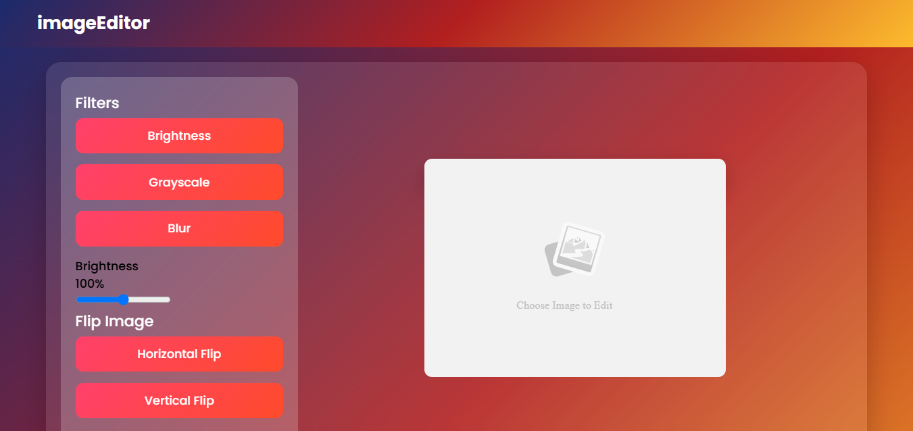
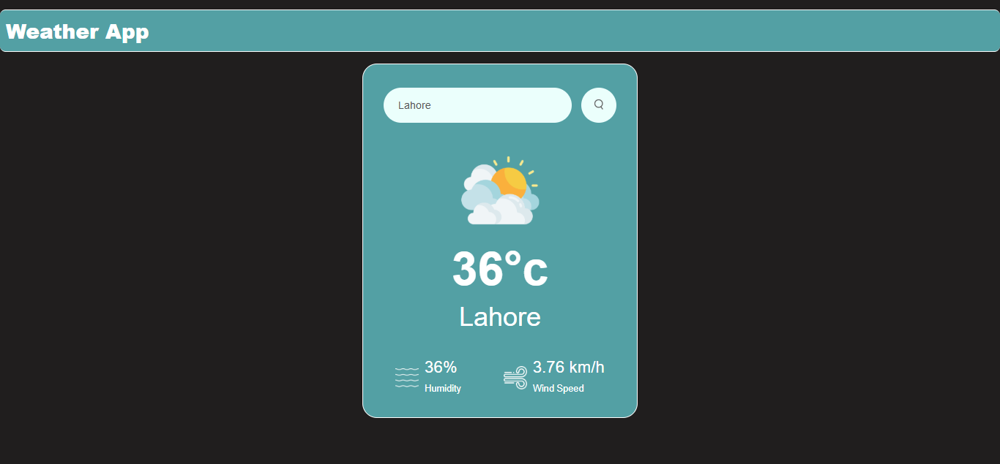
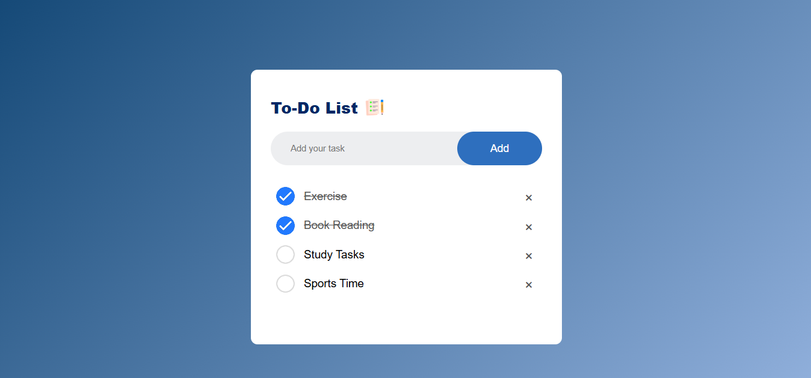

I'm a Full Stack Developer and a Passionate Programmer.

Built a lightweight, browser-based image editor using HTML5 Canvas, CSS, and Vanilla JavaScript for instant, client-side photo editing and filtering.

Developed a real-time weather web app using HTML, CSS, and modern JavaScript that fetches live global climate data via REST APIs.

Created a responsive To-Do List web app using HTML, CSS, and Vanilla JavaScript with LocalStorage for persistent task management.